배현성 포트폴리오
2026년 11월 기준. 게임 기획으로 출발해 프로그래머로 전향한 개발자입니다. 2026년 9월 말부터 AI 에이전트(Claude Code, Codex)와 게임 세 편을 만들었습니다. 세 게임 모두 기획과 방향 결정, 작업 지시와 검수는 제가 했고 구현은 AI 에이전트 세션이 했습니다.
포트폴리오 PDF 열기 (10쪽)조선척귀대 (Shaman Survivor)
세로 화면 서바이벌 액션 · Godot 4.7.2 · Google Play 비공개 테스트 단계
밤마다 고을로 넘어오는 한국 요괴를 부적과 마법진으로 쓸어내고, 봉인한 요괴를 다음 밤 수호령으로 부리는 게임입니다.
- 영상 32.7초, 720×1280, 60fps, 소리 없음
- 2026-11-23에 웹 내보내기 화면을 창 없이 촬영했습니다. 폰 실기 캡처가 아닙니다.
- 무기 6칸을 모두 진화시킨 촬영용 설정이며, 레벨업 카드 화면은 걸러 내고 이어 붙였습니다.
스크린샷


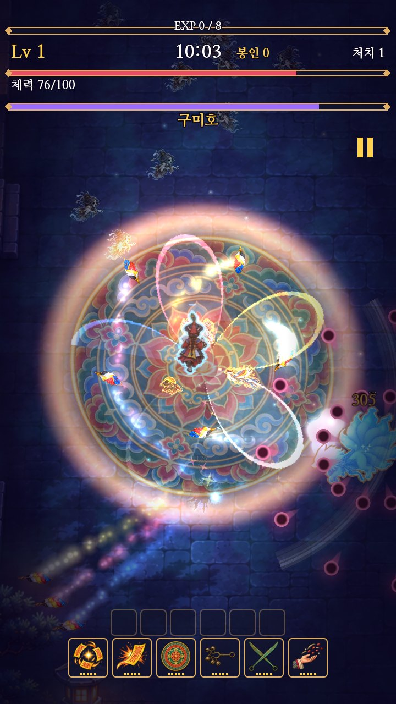

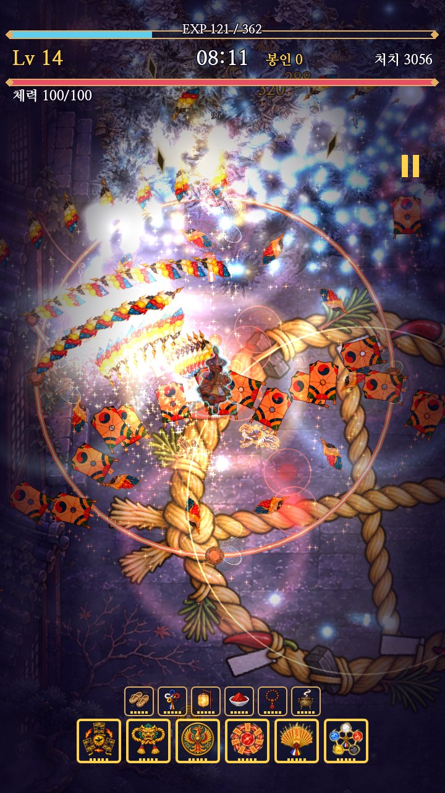

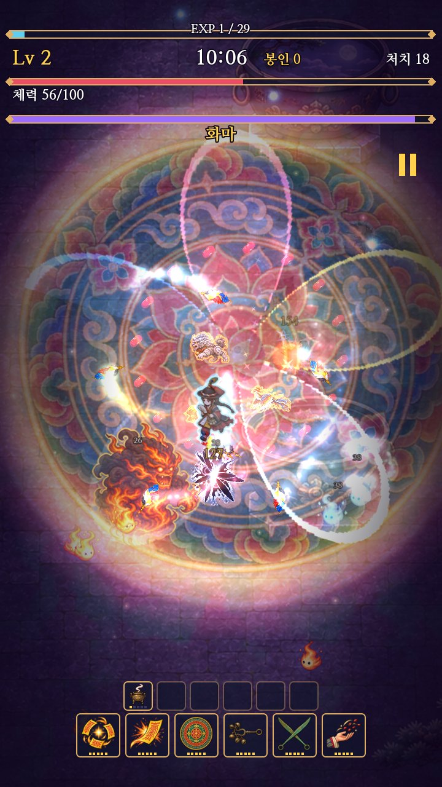


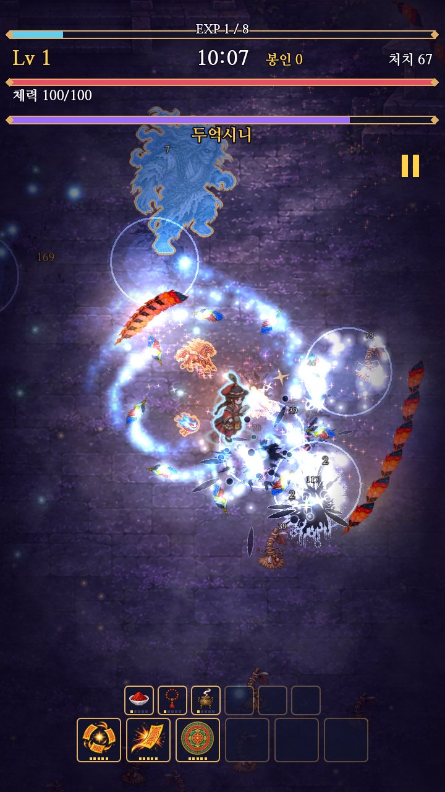


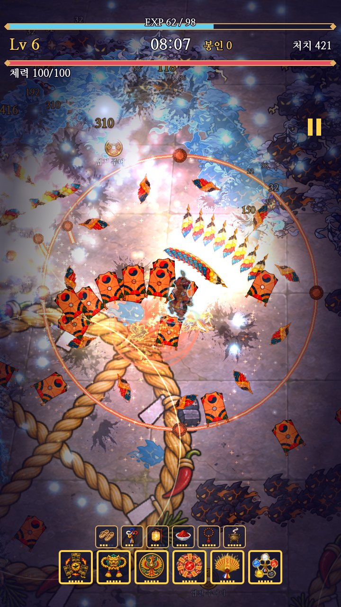


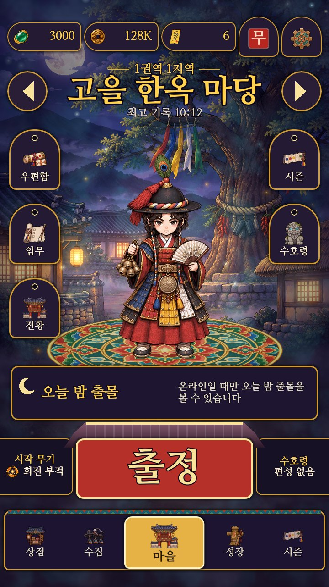

견습 마녀 키우기 (Apprentice Witch Idle)
세로 화면 방치형 RPG · Phaser 3 + TypeScript · Google Play 공개
견습 마녀가 사역마와 길을 떠나 몬스터를 쓸어 담고 등급 시험을 거쳐 대마녀가 되는 게임입니다. 한국어·영어·일본어·번체 중국어로 서비스합니다.
- 영상 29.2초, 1080×1920, 소리 없음. 스토어용으로 만든 소개 영상이라 화면 아래에 안내 문구가 들어 있습니다.
- 아래 스크린샷은 문구를 얹기 전의 게임 화면입니다.
스크린샷

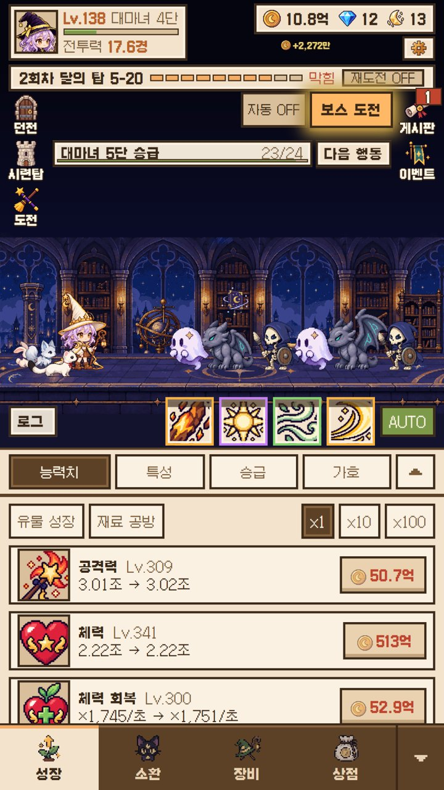

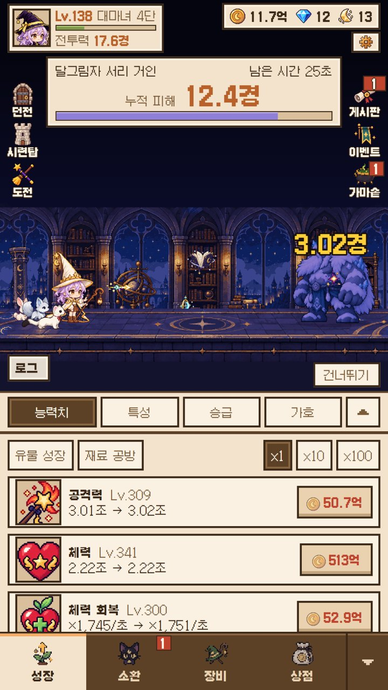

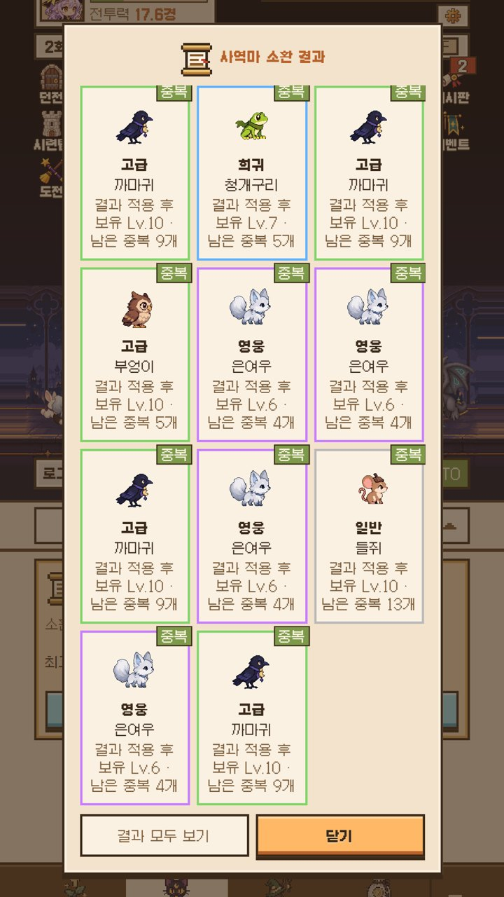

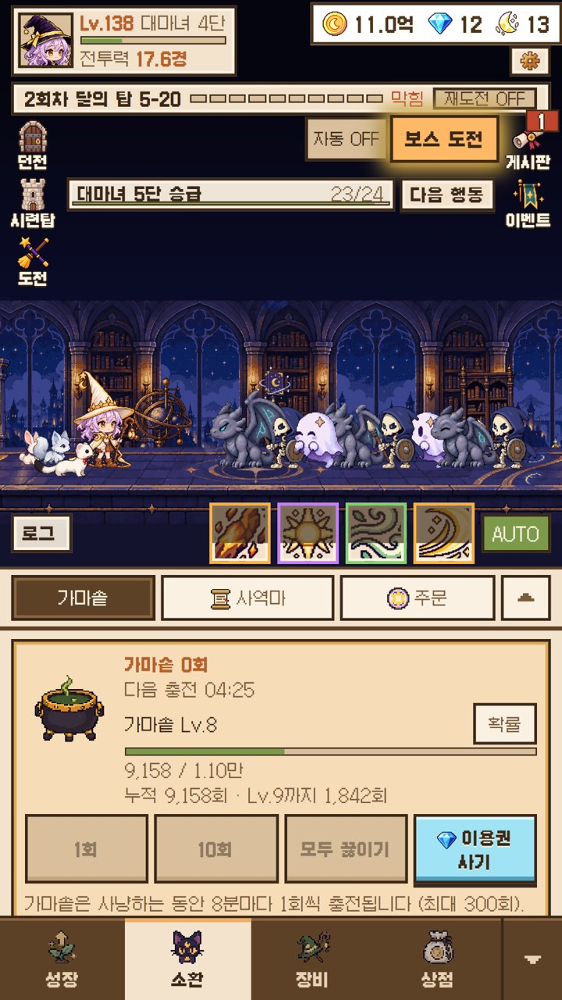

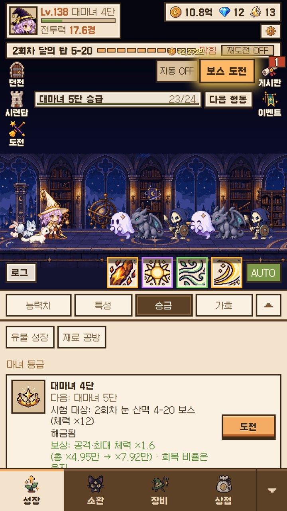

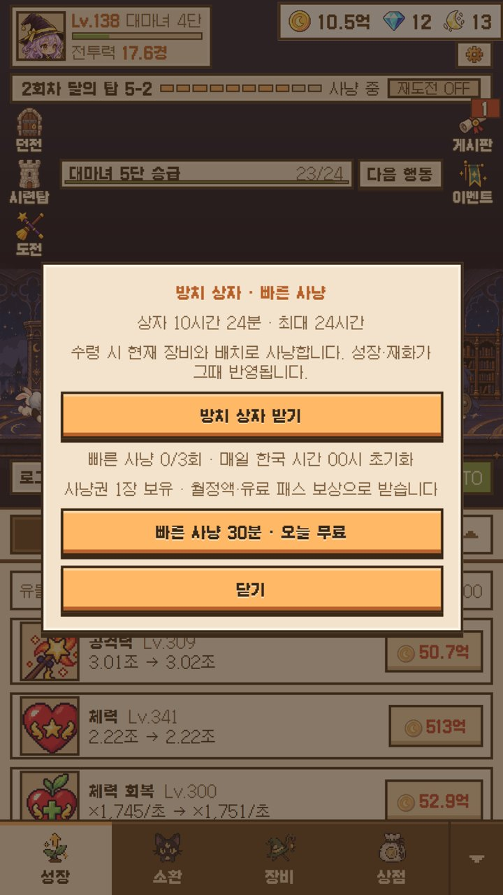
바닷길 상단 (가칭 Sea Trade)
가로 화면 자동 항해 교역 게임 · Godot 4.7.2 · 출시 전
실제 동아시아 지형의 항구 28곳에서 바람과 계절을 읽어 범선 상단을 키우는 게임입니다.
- 영상 33.3초, 1920×1080, 소리 없음. 낮 항해, 해도, 조선소, 선단, 밤 항해 순서입니다.
- 개발 중인 판을 2026-11-13에 촬영했습니다.
스크린샷

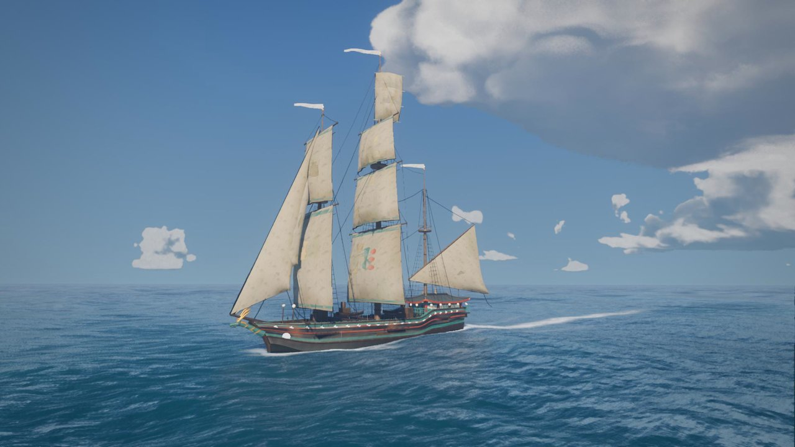

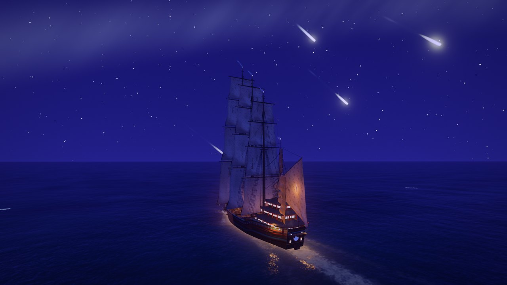

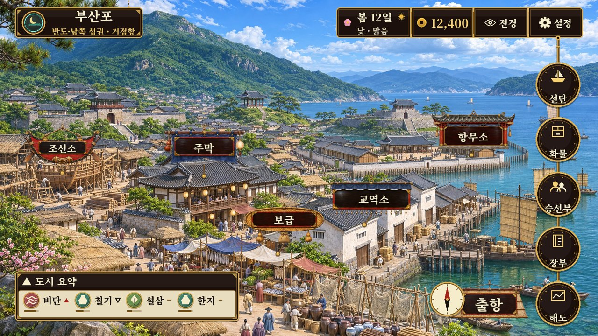

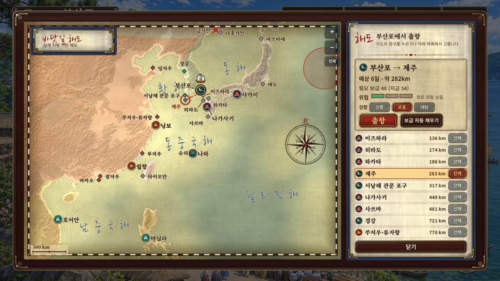

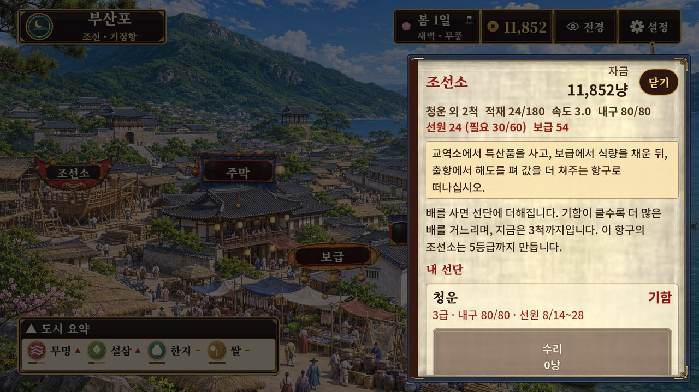

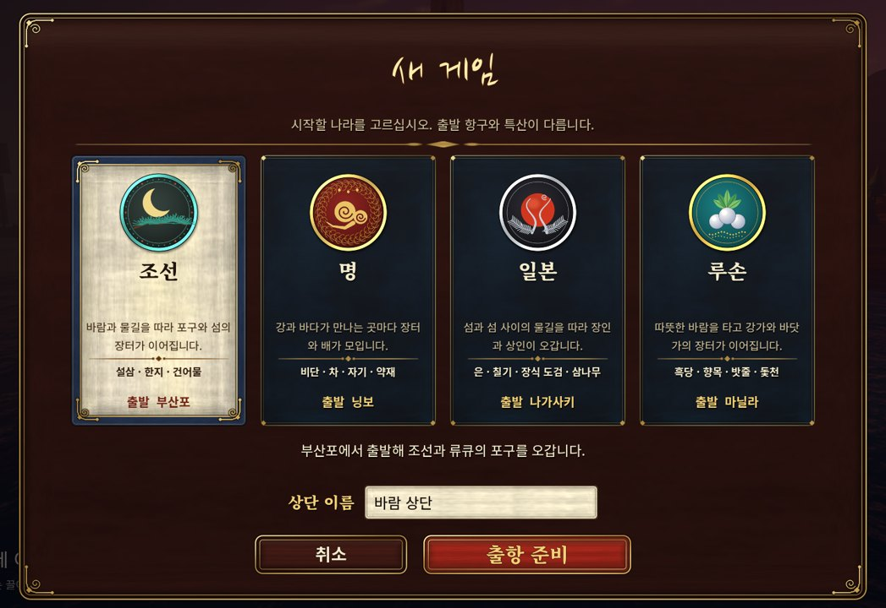
회사 프로젝트
회사에서 만든 게임과 웹 서비스
| 오븐코드 모바일 게임 세 편 | 바우와우 디펜스 · BunkerDefence · SlimeHunter, Unity 클라이언트. 소스 비공개. 다른 채널이 올린 플레이 영상: 바우와우 디펜스, SlimeHunter |
|---|---|
| StoryBeginz · Teazr | 웹·백엔드. 2024-08 오븐코드에서 시작해 고용 승계 뒤 시드라에서 이어 맡고 있습니다. 소스 비공개. |
| 담당 범위 | PDF 9쪽에 있습니다. |